Exercise 2703： Let ADB be a triangle with AD⊥DB and DO⊥AB where O lies on AB. D is the midpoint of AC. OD=OB. Prove that OB⊥BC.
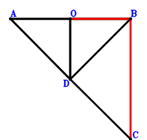
\(\because \) D is the midpoint of AC \(\therefore \small\overrightarrow{BD}=\dfrac{\small\overrightarrow{BA}}{2} + \dfrac{\small\overrightarrow{BC}}{2}\).\(\because \) ADB is a triangle with AD⊥DB and DO⊥AB where O lies on AB \(\therefore \small\overrightarrow{BA} \cdot \small\overrightarrow{BO} - \small\overrightarrow{BD}^{2}=\small\overrightarrow{BA} \cdot \small\overrightarrow{BO} - \left(\dfrac{\small\overrightarrow{BA}}{2} + \dfrac{\small\overrightarrow{BC}}{2}\right)^{2}=- \dfrac{\small\overrightarrow{BA}^{2}}{4} - \dfrac{\small\overrightarrow{BA} \cdot \small\overrightarrow{BC}}{2} + \small\overrightarrow{BA} \cdot \small\overrightarrow{BO} - \dfrac{\small\overrightarrow{BC}^{2}}{4}=0\) . . . . . . \(①\)\(\because \) OD=OB \(\therefore - \small\overrightarrow{OB}^{2} + \small\overrightarrow{OD}^{2}=- \small\overrightarrow{BO}^{2} + \left(\small\overrightarrow{BD} - \small\overrightarrow{BO}\right)^{2}=- \small\overrightarrow{BO}^{2} + \left(\dfrac{\small\overrightarrow{BA}}{2} + \dfrac{\small\overrightarrow{BC}}{2} - \small\overrightarrow{BO}\right)^{2}=\dfrac{\small\overrightarrow{BA}^{2}}{4} + \dfrac{\small\overrightarrow{BA} \cdot \small\overrightarrow{BC}}{2} - \small\overrightarrow{BA} \cdot \small\overrightarrow{BO} + \dfrac{\small\overrightarrow{BC}^{2}}{4} - \small\overrightarrow{BC} \cdot \small\overrightarrow{BO}=0\) . . . . . . \(②\)In conclusion, \(\small\overrightarrow{BC} \cdot \small\overrightarrow{BO}=-①-②=0\), that is, OB⊥BC.
Exercise 2737： Let D, H, G be the midpoints of AC, PB, FO, respectively. E is the midpoint of OP and FB. OB⊥BC. OD=OB. Given that AB//GH, prove that \(DB^{2}=AB \cdot GH\).
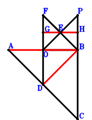
\(\because \) D is the midpoint of AC \(\therefore \small\overrightarrow{BD}=\dfrac{\small\overrightarrow{BA}}{2} + \dfrac{\small\overrightarrow{BC}}{2}\).\(\because \) E is the midpoint of OP \(\therefore \small\overrightarrow{BE}=\dfrac{\small\overrightarrow{BO}}{2} + \dfrac{\small\overrightarrow{BP}}{2}\).\(\because \) E is the midpoint of FB \(\therefore \small\overrightarrow{BF}=2 \small\overrightarrow{BE}=\small\overrightarrow{BO} + \small\overrightarrow{BP}\).\(\because \) G is the midpoint of FO \(\therefore \small\overrightarrow{BG}=\dfrac{\small\overrightarrow{BF}}{2} + \dfrac{\small\overrightarrow{BO}}{2}=\small\overrightarrow{BO} + \dfrac{\small\overrightarrow{BP}}{2}\).\(\because \) H is the midpoint of PB \(\therefore \small\overrightarrow{BH}=\dfrac{\small\overrightarrow{BP}}{2}\).\(\because \) OD=OB \(\therefore - \small\overrightarrow{OB}^{2} + \small\overrightarrow{OD}^{2}=- \small\overrightarrow{BO}^{2} + \left(\small\overrightarrow{BD} - \small\overrightarrow{BO}\right)^{2}=- \small\overrightarrow{BO}^{2} + \left(\dfrac{\small\overrightarrow{BA}}{2} + \dfrac{\small\overrightarrow{BC}}{2} - \small\overrightarrow{BO}\right)^{2}=\dfrac{\small\overrightarrow{BA}^{2}}{4} + \dfrac{\small\overrightarrow{BA} \cdot \small\overrightarrow{BC}}{2} - \small\overrightarrow{BA} \cdot \small\overrightarrow{BO} + \dfrac{\small\overrightarrow{BC}^{2}}{4} - \small\overrightarrow{BC} \cdot \small\overrightarrow{BO}=0\) . . . . . . \(①\)\(\because \) OB⊥BC \(\therefore \small\overrightarrow{BC} \cdot \small\overrightarrow{BO}=0\) . . . . . . \(②\)In conclusion, \(\small\overrightarrow{BA} \cdot \small\overrightarrow{HG} - \small\overrightarrow{DB}^{2}=\small\overrightarrow{BA} \cdot \left(\small\overrightarrow{BG} - \small\overrightarrow{BH}\right) - \small\overrightarrow{BD}^{2}=\small\overrightarrow{BA} \cdot \small\overrightarrow{BO} - \left(\dfrac{\small\overrightarrow{BA}}{2} + \dfrac{\small\overrightarrow{BC}}{2}\right)^{2}=- \dfrac{\small\overrightarrow{BA}^{2}}{4} - \dfrac{\small\overrightarrow{BA} \cdot \small\overrightarrow{BC}}{2} + \small\overrightarrow{BA} \cdot \small\overrightarrow{BO} - \dfrac{\small\overrightarrow{BC}^{2}}{4}=-①-②=0\)\(\because\) AB//GH \(\therefore\) \(DB^{2}=AB \cdot GH\).
Exercise 2748： Let PEOB be a trapezoid with PB//EO and PB=2EO. D, F are the midpoints of AC, PB, respectively. OB⊥BC. OD=OB. Given that AB//EF, prove that \(DB^{2}=AB \cdot EF\).
Exercise 2756： Let POBE be a parallelogram. D is the midpoint of AC. F is the midpoint of OG and BE. OB⊥BC. DO=OB. Given that PG//AB, prove that \(DB^{2}=\dfrac{AB \cdot PG}{2}\).
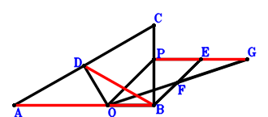
\(\because \) D is the midpoint of AC \(\therefore \small\overrightarrow{BD}=\dfrac{\small\overrightarrow{BA}}{2} + \dfrac{\small\overrightarrow{BC}}{2}\).\(\because \) POBE is a parallelogram \(\therefore \small\overrightarrow{BE}=- \small\overrightarrow{BO} + \small\overrightarrow{BP}\).\(\because \) F is the midpoint of BE \(\therefore \small\overrightarrow{BF}=\dfrac{\small\overrightarrow{BE}}{2}=- \dfrac{\small\overrightarrow{BO}}{2} + \dfrac{\small\overrightarrow{BP}}{2}\).\(\because \) F is the midpoint of OG \(\therefore \small\overrightarrow{BG}=2 \small\overrightarrow{BF} - \small\overrightarrow{BO}=- 2 \small\overrightarrow{BO} + \small\overrightarrow{BP}\).\(\because \) DO=OB \(\therefore - \small\overrightarrow{OB}^{2} + \small\overrightarrow{OD}^{2}=- \small\overrightarrow{BO}^{2} + \left(\small\overrightarrow{BD} - \small\overrightarrow{BO}\right)^{2}=- \small\overrightarrow{BO}^{2} + \left(\dfrac{\small\overrightarrow{BA}}{2} + \dfrac{\small\overrightarrow{BC}}{2} - \small\overrightarrow{BO}\right)^{2}=\dfrac{\small\overrightarrow{BA}^{2}}{4} + \dfrac{\small\overrightarrow{BA} \cdot \small\overrightarrow{BC}}{2} - \small\overrightarrow{BA} \cdot \small\overrightarrow{BO} + \dfrac{\small\overrightarrow{BC}^{2}}{4} - \small\overrightarrow{BC} \cdot \small\overrightarrow{BO}=0\) . . . . . . \(①\)\(\because \) OB⊥BC \(\therefore \small\overrightarrow{BC} \cdot \small\overrightarrow{BO}=0\) . . . . . . \(②\)In conclusion, \(\small\overrightarrow{AB} \cdot \small\overrightarrow{PG} - 2 \small\overrightarrow{DB}^{2}=- \small\overrightarrow{BA} \cdot \left(\small\overrightarrow{BG} - \small\overrightarrow{BP}\right) - 2 \small\overrightarrow{BD}^{2}=2 \small\overrightarrow{BA} \cdot \small\overrightarrow{BO} - 2 \left(\dfrac{\small\overrightarrow{BA}}{2} + \dfrac{\small\overrightarrow{BC}}{2}\right)^{2}=- \dfrac{\small\overrightarrow{BA}^{2}}{2} - \small\overrightarrow{BA} \cdot \small\overrightarrow{BC} + 2 \small\overrightarrow{BA} \cdot \small\overrightarrow{BO} - \dfrac{\small\overrightarrow{BC}^{2}}{2}=-2\cdot①-2\cdot②=0\)\(\because\) PG//AB \(\therefore\) \(DB^{2}=\dfrac{AB \cdot PG}{2}\).
Exercise 2766： Let FOBG be a parallelogram. D is the midpoint of AC. E is the midpoint of OF and PB. OB⊥BC. DO=OB. Given that PG//AB, prove that \(DB^{2}=\dfrac{AB \cdot PG}{2}\).
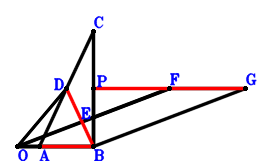
\(\because \) D is the midpoint of AC \(\therefore \small\overrightarrow{BD}=\dfrac{\small\overrightarrow{BA}}{2} + \dfrac{\small\overrightarrow{BC}}{2}\).\(\because \) E is the midpoint of PB \(\therefore \small\overrightarrow{BE}=\dfrac{\small\overrightarrow{BP}}{2}\).\(\because \) E is the midpoint of OF \(\therefore \small\overrightarrow{BF}=2 \small\overrightarrow{BE} - \small\overrightarrow{BO}=- \small\overrightarrow{BO} + \small\overrightarrow{BP}\).\(\because \) FOBG is a parallelogram \(\therefore \small\overrightarrow{BG}=- 2 \small\overrightarrow{BO} + \small\overrightarrow{BP}\).\(\because \) DO=OB \(\therefore - \small\overrightarrow{OB}^{2} + \small\overrightarrow{OD}^{2}=- \small\overrightarrow{BO}^{2} + \left(\small\overrightarrow{BD} - \small\overrightarrow{BO}\right)^{2}=- \small\overrightarrow{BO}^{2} + \left(\dfrac{\small\overrightarrow{BA}}{2} + \dfrac{\small\overrightarrow{BC}}{2} - \small\overrightarrow{BO}\right)^{2}=\dfrac{\small\overrightarrow{BA}^{2}}{4} + \dfrac{\small\overrightarrow{BA} \cdot \small\overrightarrow{BC}}{2} - \small\overrightarrow{BA} \cdot \small\overrightarrow{BO} + \dfrac{\small\overrightarrow{BC}^{2}}{4} - \small\overrightarrow{BC} \cdot \small\overrightarrow{BO}=0\) . . . . . . \(①\)\(\because \) OB⊥BC \(\therefore \small\overrightarrow{BC} \cdot \small\overrightarrow{BO}=0\) . . . . . . \(②\)In conclusion, \(\small\overrightarrow{AB} \cdot \small\overrightarrow{PG} - 2 \small\overrightarrow{DB}^{2}=- \small\overrightarrow{BA} \cdot \left(\small\overrightarrow{BG} - \small\overrightarrow{BP}\right) - 2 \small\overrightarrow{BD}^{2}=2 \small\overrightarrow{BA} \cdot \small\overrightarrow{BO} - 2 \left(\dfrac{\small\overrightarrow{BA}}{2} + \dfrac{\small\overrightarrow{BC}}{2}\right)^{2}=- \dfrac{\small\overrightarrow{BA}^{2}}{2} - \small\overrightarrow{BA} \cdot \small\overrightarrow{BC} + 2 \small\overrightarrow{BA} \cdot \small\overrightarrow{BO} - \dfrac{\small\overrightarrow{BC}^{2}}{2}=-2\cdot①-2\cdot②=0\)\(\because\) PG//AB \(\therefore\) \(DB^{2}=\dfrac{AB \cdot PG}{2}\).
Exercise 2771： Let B, D, O be the midpoints of PE, AC, FE, respectively. OB⊥BC. DO=OB. Given that AB//FP, prove that \(DB^{2}=\dfrac{AB \cdot FP}{2}\).
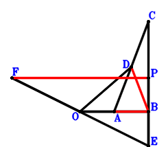
\(\because \) D is the midpoint of AC \(\therefore \small\overrightarrow{BD}=\dfrac{\small\overrightarrow{BA}}{2} + \dfrac{\small\overrightarrow{BC}}{2}\).\(\because \) B is the midpoint of PE \(\therefore \small\overrightarrow{BE}=- \small\overrightarrow{BP}\).\(\because \) O is the midpoint of FE \(\therefore \small\overrightarrow{BF}=- \small\overrightarrow{BE} + 2 \small\overrightarrow{BO}=2 \small\overrightarrow{BO} + \small\overrightarrow{BP}\).\(\because \) DO=OB \(\therefore - \small\overrightarrow{OB}^{2} + \small\overrightarrow{OD}^{2}=- \small\overrightarrow{BO}^{2} + \left(\small\overrightarrow{BD} - \small\overrightarrow{BO}\right)^{2}=- \small\overrightarrow{BO}^{2} + \left(\dfrac{\small\overrightarrow{BA}}{2} + \dfrac{\small\overrightarrow{BC}}{2} - \small\overrightarrow{BO}\right)^{2}=\dfrac{\small\overrightarrow{BA}^{2}}{4} + \dfrac{\small\overrightarrow{BA} \cdot \small\overrightarrow{BC}}{2} - \small\overrightarrow{BA} \cdot \small\overrightarrow{BO} + \dfrac{\small\overrightarrow{BC}^{2}}{4} - \small\overrightarrow{BC} \cdot \small\overrightarrow{BO}=0\) . . . . . . \(①\)\(\because \) OB⊥BC \(\therefore \small\overrightarrow{BC} \cdot \small\overrightarrow{BO}=0\) . . . . . . \(②\)In conclusion, \(\small\overrightarrow{AB} \cdot \small\overrightarrow{FP} - 2 \small\overrightarrow{DB}^{2}=- \small\overrightarrow{BA} \cdot \left(- \small\overrightarrow{BF} + \small\overrightarrow{BP}\right) - 2 \small\overrightarrow{BD}^{2}=2 \small\overrightarrow{BA} \cdot \small\overrightarrow{BO} - 2 \left(\dfrac{\small\overrightarrow{BA}}{2} + \dfrac{\small\overrightarrow{BC}}{2}\right)^{2}=- \dfrac{\small\overrightarrow{BA}^{2}}{2} - \small\overrightarrow{BA} \cdot \small\overrightarrow{BC} + 2 \small\overrightarrow{BA} \cdot \small\overrightarrow{BO} - \dfrac{\small\overrightarrow{BC}^{2}}{2}=-2\cdot①-2\cdot②=0\)\(\because\) AB//FP \(\therefore\) \(DB^{2}=\dfrac{AB \cdot FP}{2}\).
Exercise 2783： Let EOBP be a trapezoid with EP//OB and EP=2OB. D is the midpoint of AC. OB⊥BC. OD=OB. Given that AB//EP, prove that \(DB^{2}=\dfrac{AB \cdot EP}{2}\).
Exercise 2788： Let POEF be a parallelogram. D, B are the midpoints of AC, OE, respectively. OB⊥BC. DO=OB. Given that PF//AB, prove that \(DB^{2}=\dfrac{AB \cdot PF}{2}\).
Exercise 2839： Let OFGB and OPFB be parallelograms. CEBO is a rectangle. D is the midpoint of CA. DO=DB. Prove that PG⊥BA.
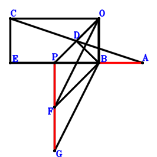
\(\because \) D is the midpoint of CA \(\therefore \small\overrightarrow{BD}=\dfrac{\small\overrightarrow{BA}}{2} + \dfrac{\small\overrightarrow{BC}}{2}\).\(\because \) CEBO is a parallelogram \(\therefore \small\overrightarrow{BE}=\small\overrightarrow{BC} - \small\overrightarrow{BO}\).\(\because \) OPFB is a parallelogram \(\therefore \small\overrightarrow{BF}=- \small\overrightarrow{BO} + \small\overrightarrow{BP}\).\(\because \) OFGB is a parallelogram \(\therefore \small\overrightarrow{BG}=- 2 \small\overrightarrow{BO} + \small\overrightarrow{BP}\).\(\because \) DO=DB \(\therefore - \small\overrightarrow{DB}^{2} + \small\overrightarrow{OD}^{2}=- \small\overrightarrow{BD}^{2} + \left(\small\overrightarrow{BD} - \small\overrightarrow{BO}\right)^{2}=- \left(\dfrac{\small\overrightarrow{BA}}{2} + \dfrac{\small\overrightarrow{BC}}{2}\right)^{2} + \left(\dfrac{\small\overrightarrow{BA}}{2} + \dfrac{\small\overrightarrow{BC}}{2} - \small\overrightarrow{BO}\right)^{2}=- \small\overrightarrow{BA} \cdot \small\overrightarrow{BO} - \small\overrightarrow{BC} \cdot \small\overrightarrow{BO} + \small\overrightarrow{BO}^{2}=0\) . . . . . . \(①\)\(\because \) EB⊥BO \(\therefore \small\overrightarrow{BE} \cdot \small\overrightarrow{BO}=\small\overrightarrow{BO} \cdot \left(\small\overrightarrow{BC} - \small\overrightarrow{BO}\right)=\small\overrightarrow{BC} \cdot \small\overrightarrow{BO} - \small\overrightarrow{BO}^{2}=0\) . . . . . . \(②\)In conclusion, \(\small\overrightarrow{AB} \cdot \small\overrightarrow{PG}=- \small\overrightarrow{BA} \cdot \left(\small\overrightarrow{BG} - \small\overrightarrow{BP}\right)=2 \small\overrightarrow{BA} \cdot \small\overrightarrow{BO}=-2\cdot①-2\cdot②=0\), that is, PG⊥BA.
Exercise 2841： Let OPGB and OGHB be parallelograms. D is the midpoint of CA. E is the midpoint of OF and BC. OB⊥BF. OD=BD. Prove that PH⊥BA.
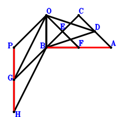
\(\because \) D is the midpoint of CA \(\therefore \small\overrightarrow{BD}=\dfrac{\small\overrightarrow{BA}}{2} + \dfrac{\small\overrightarrow{BC}}{2}\).\(\because \) E is the midpoint of BC \(\therefore \small\overrightarrow{BE}=\dfrac{\small\overrightarrow{BC}}{2}\).\(\because \) E is the midpoint of OF \(\therefore \small\overrightarrow{BF}=2 \small\overrightarrow{BE} - \small\overrightarrow{BO}=\small\overrightarrow{BC} - \small\overrightarrow{BO}\).\(\because \) OPGB is a parallelogram \(\therefore \small\overrightarrow{BG}=- \small\overrightarrow{BO} + \small\overrightarrow{BP}\).\(\because \) OGHB is a parallelogram \(\therefore \small\overrightarrow{BH}=- 2 \small\overrightarrow{BO} + \small\overrightarrow{BP}\).\(\because \) OD=BD \(\therefore - \small\overrightarrow{DB}^{2} + \small\overrightarrow{OD}^{2}=- \small\overrightarrow{BD}^{2} + \left(\small\overrightarrow{BD} - \small\overrightarrow{BO}\right)^{2}=- \left(\dfrac{\small\overrightarrow{BA}}{2} + \dfrac{\small\overrightarrow{BC}}{2}\right)^{2} + \left(\dfrac{\small\overrightarrow{BA}}{2} + \dfrac{\small\overrightarrow{BC}}{2} - \small\overrightarrow{BO}\right)^{2}=- \small\overrightarrow{BA} \cdot \small\overrightarrow{BO} - \small\overrightarrow{BC} \cdot \small\overrightarrow{BO} + \small\overrightarrow{BO}^{2}=0\) . . . . . . \(①\)\(\because \) OB⊥BF \(\therefore \small\overrightarrow{BF} \cdot \small\overrightarrow{BO}=\small\overrightarrow{BO} \cdot \left(\small\overrightarrow{BC} - \small\overrightarrow{BO}\right)=\small\overrightarrow{BC} \cdot \small\overrightarrow{BO} - \small\overrightarrow{BO}^{2}=0\) . . . . . . \(②\)In conclusion, \(\small\overrightarrow{AB} \cdot \small\overrightarrow{PH}=- \small\overrightarrow{BA} \cdot \left(\small\overrightarrow{BH} - \small\overrightarrow{BP}\right)=2 \small\overrightarrow{BA} \cdot \small\overrightarrow{BO}=-2\cdot①-2\cdot②=0\), that is, PH⊥BA.
Exercise 2855： Let HGBO be a parallelogram. CEBO is a rectangle. D is the midpoint of CA. F is the midpoint of PO and GB. DO=DB. Prove that BA⊥HP.
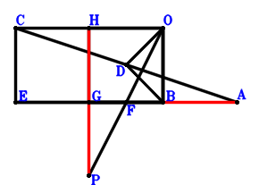
\(\because \) D is the midpoint of CA \(\therefore \small\overrightarrow{BD}=\dfrac{\small\overrightarrow{BA}}{2} + \dfrac{\small\overrightarrow{BC}}{2}\).\(\because \) CEBO is a parallelogram \(\therefore \small\overrightarrow{BE}=\small\overrightarrow{BC} - \small\overrightarrow{BO}\).\(\because \) F is the midpoint of PO \(\therefore \small\overrightarrow{BF}=\dfrac{\small\overrightarrow{BO}}{2} + \dfrac{\small\overrightarrow{BP}}{2}\).\(\because \) F is the midpoint of GB \(\therefore \small\overrightarrow{BG}=2 \small\overrightarrow{BF}=\small\overrightarrow{BO} + \small\overrightarrow{BP}\).\(\because \) HGBO is a parallelogram \(\therefore \small\overrightarrow{BH}=2 \small\overrightarrow{BO} + \small\overrightarrow{BP}\).\(\because \) DO=DB \(\therefore - \small\overrightarrow{DB}^{2} + \small\overrightarrow{OD}^{2}=- \small\overrightarrow{BD}^{2} + \left(\small\overrightarrow{BD} - \small\overrightarrow{BO}\right)^{2}=- \left(\dfrac{\small\overrightarrow{BA}}{2} + \dfrac{\small\overrightarrow{BC}}{2}\right)^{2} + \left(\dfrac{\small\overrightarrow{BA}}{2} + \dfrac{\small\overrightarrow{BC}}{2} - \small\overrightarrow{BO}\right)^{2}=- \small\overrightarrow{BA} \cdot \small\overrightarrow{BO} - \small\overrightarrow{BC} \cdot \small\overrightarrow{BO} + \small\overrightarrow{BO}^{2}=0\) . . . . . . \(①\)\(\because \) EB⊥BO \(\therefore \small\overrightarrow{BE} \cdot \small\overrightarrow{BO}=\small\overrightarrow{BO} \cdot \left(\small\overrightarrow{BC} - \small\overrightarrow{BO}\right)=\small\overrightarrow{BC} \cdot \small\overrightarrow{BO} - \small\overrightarrow{BO}^{2}=0\) . . . . . . \(②\)In conclusion, \(\small\overrightarrow{AB} \cdot \small\overrightarrow{HP}=- \small\overrightarrow{BA} \cdot \left(- \small\overrightarrow{BH} + \small\overrightarrow{BP}\right)=2 \small\overrightarrow{BA} \cdot \small\overrightarrow{BO}=-2\cdot①-2\cdot②=0\), that is, BA⊥HP.
Exercise 2868： Let OHIB be a parallelogram. D is the midpoint of CA. G is the midpoint of PB and HO. E is the midpoint of FC and OB. FB⊥BO. OD=BD. Prove that PI⊥BA.
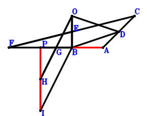
\(\because \) D is the midpoint of CA \(\therefore \small\overrightarrow{BD}=\dfrac{\small\overrightarrow{BA}}{2} + \dfrac{\small\overrightarrow{BC}}{2}\).\(\because \) E is the midpoint of OB \(\therefore \small\overrightarrow{BE}=\dfrac{\small\overrightarrow{BO}}{2}\).\(\because \) E is the midpoint of FC \(\therefore \small\overrightarrow{BF}=- \small\overrightarrow{BC} + 2 \small\overrightarrow{BE}=- \small\overrightarrow{BC} + \small\overrightarrow{BO}\).\(\because \) G is the midpoint of PB \(\therefore \small\overrightarrow{BG}=\dfrac{\small\overrightarrow{BP}}{2}\).\(\because \) G is the midpoint of HO \(\therefore \small\overrightarrow{BH}=2 \small\overrightarrow{BG} - \small\overrightarrow{BO}=- \small\overrightarrow{BO} + \small\overrightarrow{BP}\).\(\because \) OHIB is a parallelogram \(\therefore \small\overrightarrow{BI}=- 2 \small\overrightarrow{BO} + \small\overrightarrow{BP}\).\(\because \) OD=BD \(\therefore - \small\overrightarrow{DB}^{2} + \small\overrightarrow{OD}^{2}=- \small\overrightarrow{BD}^{2} + \left(\small\overrightarrow{BD} - \small\overrightarrow{BO}\right)^{2}=- \left(\dfrac{\small\overrightarrow{BA}}{2} + \dfrac{\small\overrightarrow{BC}}{2}\right)^{2} + \left(\dfrac{\small\overrightarrow{BA}}{2} + \dfrac{\small\overrightarrow{BC}}{2} - \small\overrightarrow{BO}\right)^{2}=- \small\overrightarrow{BA} \cdot \small\overrightarrow{BO} - \small\overrightarrow{BC} \cdot \small\overrightarrow{BO} + \small\overrightarrow{BO}^{2}=0\) . . . . . . \(①\)\(\because \) FB⊥BO \(\therefore - \small\overrightarrow{BF} \cdot \small\overrightarrow{BO}=- \small\overrightarrow{BO} \cdot \left(- \small\overrightarrow{BC} + \small\overrightarrow{BO}\right)=\small\overrightarrow{BC} \cdot \small\overrightarrow{BO} - \small\overrightarrow{BO}^{2}=0\) . . . . . . \(②\)In conclusion, \(\small\overrightarrow{AB} \cdot \pi=- \small\overrightarrow{BA} \cdot \left(\small\overrightarrow{BI} - \small\overrightarrow{BP}\right)=2 \small\overrightarrow{BA} \cdot \small\overrightarrow{BO}=-2\cdot①-2\cdot②=0\), that is, PI⊥BA.
Exercise 2997： Let E, H, D be the midpoints of PO, GB, CA, respectively. F is the midpoint of GO and BP. CO⊥OB. DO=DB. Prove that AB⊥HE.
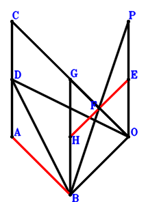
\(\because \) D is the midpoint of CA \(\therefore \small\overrightarrow{OD}=\dfrac{\small\overrightarrow{OA}}{2} + \dfrac{\small\overrightarrow{OC}}{2}\).\(\because \) E is the midpoint of PO \(\therefore \small\overrightarrow{OE}=\dfrac{\small\overrightarrow{OP}}{2}\).\(\because \) F is the midpoint of BP \(\therefore \small\overrightarrow{OF}=\dfrac{\small\overrightarrow{OB}}{2} + \dfrac{\small\overrightarrow{OP}}{2}\).\(\because \) F is the midpoint of GO \(\therefore \small\overrightarrow{OG}=2 \small\overrightarrow{OF}=\small\overrightarrow{OB} + \small\overrightarrow{OP}\).\(\because \) H is the midpoint of GB \(\therefore \small\overrightarrow{OH}=\dfrac{\small\overrightarrow{OB}}{2} + \dfrac{\small\overrightarrow{OG}}{2}=\small\overrightarrow{OB} + \dfrac{\small\overrightarrow{OP}}{2}\).\(\because \) DO=DB \(\therefore - \small\overrightarrow{DB}^{2} + \small\overrightarrow{OD}^{2}=\small\overrightarrow{OD}^{2} - \left(\small\overrightarrow{OB} - \small\overrightarrow{OD}\right)^{2}=\left(\dfrac{\small\overrightarrow{OA}}{2} + \dfrac{\small\overrightarrow{OC}}{2}\right)^{2} - \left(- \dfrac{\small\overrightarrow{OA}}{2} + \small\overrightarrow{OB} - \dfrac{\small\overrightarrow{OC}}{2}\right)^{2}=\small\overrightarrow{OA} \cdot \small\overrightarrow{OB} - \small\overrightarrow{OB}^{2} + \small\overrightarrow{OB} \cdot \small\overrightarrow{OC}=0\) . . . . . . \(①\)\(\because \) CO⊥OB \(\therefore - \small\overrightarrow{OB} \cdot \small\overrightarrow{OC}=0\) . . . . . . \(②\)In conclusion, \(\small\overrightarrow{AB} \cdot \small\overrightarrow{EH}=\left(- \small\overrightarrow{OA} + \small\overrightarrow{OB}\right) \cdot \left(- \small\overrightarrow{OE} + \small\overrightarrow{OH}\right)=\small\overrightarrow{OB} \cdot \left(- \small\overrightarrow{OA} + \small\overrightarrow{OB}\right)=- \small\overrightarrow{OA} \cdot \small\overrightarrow{OB} + \small\overrightarrow{OB}^{2}=-①-②=0\), that is, AB⊥HE.
Exercise 3031： Let CEBO be a rectangle. OPFB is a trapezoid with PO//FB and PO=2FB. D, F are the midpoints of CA, GO, respectively. DO=DB. Prove that PG⊥BA.
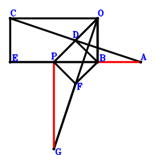
\(\because \) D is the midpoint of CA \(\therefore \small\overrightarrow{BD}=\dfrac{\small\overrightarrow{BA}}{2} + \dfrac{\small\overrightarrow{BC}}{2}\).\(\because \) CEBO is a parallelogram \(\therefore \small\overrightarrow{BE}=\small\overrightarrow{BC} - \small\overrightarrow{BO}\).\(\because \) PO//FB and PO=2FB \(\therefore \small\overrightarrow{BF}=- \dfrac{\small\overrightarrow{BO}}{2} + \dfrac{\small\overrightarrow{BP}}{2}\).\(\because \) F is the midpoint of GO \(\therefore \small\overrightarrow{BG}=2 \small\overrightarrow{BF} - \small\overrightarrow{BO}=- 2 \small\overrightarrow{BO} + \small\overrightarrow{BP}\).\(\because \) DO=DB \(\therefore - \small\overrightarrow{DB}^{2} + \small\overrightarrow{OD}^{2}=- \small\overrightarrow{BD}^{2} + \left(\small\overrightarrow{BD} - \small\overrightarrow{BO}\right)^{2}=- \left(\dfrac{\small\overrightarrow{BA}}{2} + \dfrac{\small\overrightarrow{BC}}{2}\right)^{2} + \left(\dfrac{\small\overrightarrow{BA}}{2} + \dfrac{\small\overrightarrow{BC}}{2} - \small\overrightarrow{BO}\right)^{2}=- \small\overrightarrow{BA} \cdot \small\overrightarrow{BO} - \small\overrightarrow{BC} \cdot \small\overrightarrow{BO} + \small\overrightarrow{BO}^{2}=0\) . . . . . . \(①\)\(\because \) EB⊥BO \(\therefore \small\overrightarrow{BE} \cdot \small\overrightarrow{BO}=\small\overrightarrow{BO} \cdot \left(\small\overrightarrow{BC} - \small\overrightarrow{BO}\right)=\small\overrightarrow{BC} \cdot \small\overrightarrow{BO} - \small\overrightarrow{BO}^{2}=0\) . . . . . . \(②\)In conclusion, \(\small\overrightarrow{AB} \cdot \small\overrightarrow{PG}=- \small\overrightarrow{BA} \cdot \left(\small\overrightarrow{BG} - \small\overrightarrow{BP}\right)=2 \small\overrightarrow{BA} \cdot \small\overrightarrow{BO}=-2\cdot①-2\cdot②=0\), that is, PG⊥BA.
Exercise 3037： Let OBEP be a trapezoid with OP//BE and OP=2BE. E, D are the midpoints of OF, CA, respectively. CO⊥OB. DO=DB. Prove that FP⊥AB.
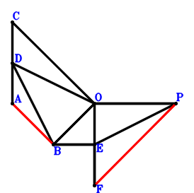
\(\because \) D is the midpoint of CA \(\therefore \small\overrightarrow{OD}=\dfrac{\small\overrightarrow{OA}}{2} + \dfrac{\small\overrightarrow{OC}}{2}\).\(\because \) OP//BE and OP=2BE \(\therefore \small\overrightarrow{OE}=\small\overrightarrow{OB} + \dfrac{\small\overrightarrow{OP}}{2}\).\(\because \) E is the midpoint of OF \(\therefore \small\overrightarrow{OF}=2 \small\overrightarrow{OE}=2 \small\overrightarrow{OB} + \small\overrightarrow{OP}\).\(\because \) DO=DB \(\therefore - \small\overrightarrow{DB}^{2} + \small\overrightarrow{OD}^{2}=\small\overrightarrow{OD}^{2} - \left(\small\overrightarrow{OB} - \small\overrightarrow{OD}\right)^{2}=\left(\dfrac{\small\overrightarrow{OA}}{2} + \dfrac{\small\overrightarrow{OC}}{2}\right)^{2} - \left(- \dfrac{\small\overrightarrow{OA}}{2} + \small\overrightarrow{OB} - \dfrac{\small\overrightarrow{OC}}{2}\right)^{2}=\small\overrightarrow{OA} \cdot \small\overrightarrow{OB} - \small\overrightarrow{OB}^{2} + \small\overrightarrow{OB} \cdot \small\overrightarrow{OC}=0\) . . . . . . \(①\)\(\because \) CO⊥OB \(\therefore - \small\overrightarrow{OB} \cdot \small\overrightarrow{OC}=0\) . . . . . . \(②\)In conclusion, \(\small\overrightarrow{AB} \cdot \small\overrightarrow{PF}=\left(- \small\overrightarrow{OA} + \small\overrightarrow{OB}\right) \cdot \left(\small\overrightarrow{OF} - \small\overrightarrow{OP}\right)=2 \small\overrightarrow{OB} \cdot \left(- \small\overrightarrow{OA} + \small\overrightarrow{OB}\right)=- 2 \small\overrightarrow{OA} \cdot \small\overrightarrow{OB} + 2 \small\overrightarrow{OB}^{2}=-2\cdot①-2\cdot②=0\), that is, FP⊥AB.
Exercise 3133： Let O, D be the midpoints of EB, CA, respectively. F is the midpoint of EG and BP. CO⊥OB. DO=DB. Prove that PG⊥AB.
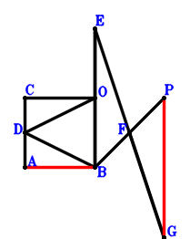
\(\because \) D is the midpoint of CA \(\therefore \small\overrightarrow{BD}=\dfrac{\small\overrightarrow{BA}}{2} + \dfrac{\small\overrightarrow{BC}}{2}\).\(\because \) O is the midpoint of EB \(\therefore \small\overrightarrow{BE}=2 \small\overrightarrow{BO}\).\(\because \) F is the midpoint of BP \(\therefore \small\overrightarrow{BF}=\dfrac{\small\overrightarrow{BP}}{2}\).\(\because \) F is the midpoint of EG \(\therefore \small\overrightarrow{BG}=2 \small\overrightarrow{BF} - 2 \small\overrightarrow{BO}=- 2 \small\overrightarrow{BO} + \small\overrightarrow{BP}\).\(\because \) DO=DB \(\therefore - \small\overrightarrow{DB}^{2} + \small\overrightarrow{OD}^{2}=- \small\overrightarrow{BD}^{2} + \left(\small\overrightarrow{BD} - \small\overrightarrow{BO}\right)^{2}=- \left(\dfrac{\small\overrightarrow{BA}}{2} + \dfrac{\small\overrightarrow{BC}}{2}\right)^{2} + \left(\dfrac{\small\overrightarrow{BA}}{2} + \dfrac{\small\overrightarrow{BC}}{2} - \small\overrightarrow{BO}\right)^{2}=- \small\overrightarrow{BA} \cdot \small\overrightarrow{BO} - \small\overrightarrow{BC} \cdot \small\overrightarrow{BO} + \small\overrightarrow{BO}^{2}=0\) . . . . . . \(①\)\(\because \) CO⊥OB \(\therefore \small\overrightarrow{CO} \cdot \small\overrightarrow{OB}=- \small\overrightarrow{BO} \cdot \left(- \small\overrightarrow{BC} + \small\overrightarrow{BO}\right)=\small\overrightarrow{BC} \cdot \small\overrightarrow{BO} - \small\overrightarrow{BO}^{2}=0\) . . . . . . \(②\)In conclusion, \(\small\overrightarrow{AB} \cdot \small\overrightarrow{PG}=- \small\overrightarrow{BA} \cdot \left(\small\overrightarrow{BG} - \small\overrightarrow{BP}\right)=2 \small\overrightarrow{BA} \cdot \small\overrightarrow{BO}=-2\cdot①-2\cdot②=0\), that is, PG⊥AB.
Exercise 3143： Let CEBO be a rectangle. OGFB is a trapezoid with OB//GF and OB=2GF. F, D, H are the midpoints of PO, CA, PB, respectively. OD=DB. Prove that BA⊥GH.
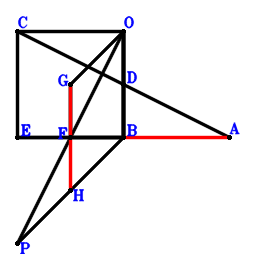
\(\because \) D is the midpoint of CA \(\therefore \small\overrightarrow{BD}=\dfrac{\small\overrightarrow{BA}}{2} + \dfrac{\small\overrightarrow{BC}}{2}\).\(\because \) CEBO is a parallelogram \(\therefore \small\overrightarrow{BE}=\small\overrightarrow{BC} - \small\overrightarrow{BO}\).\(\because \) F is the midpoint of PO \(\therefore \small\overrightarrow{BF}=\dfrac{\small\overrightarrow{BO}}{2} + \dfrac{\small\overrightarrow{BP}}{2}\).\(\because \) OB//GF and OB=2GF \(\therefore \small\overrightarrow{BG}=\small\overrightarrow{BO} + \dfrac{\small\overrightarrow{BP}}{2}\).\(\because \) H is the midpoint of PB \(\therefore \small\overrightarrow{BH}=\dfrac{\small\overrightarrow{BP}}{2}\).\(\because \) OD=DB \(\therefore - \small\overrightarrow{DB}^{2} + \small\overrightarrow{OD}^{2}=- \small\overrightarrow{BD}^{2} + \left(\small\overrightarrow{BD} - \small\overrightarrow{BO}\right)^{2}=- \left(\dfrac{\small\overrightarrow{BA}}{2} + \dfrac{\small\overrightarrow{BC}}{2}\right)^{2} + \left(\dfrac{\small\overrightarrow{BA}}{2} + \dfrac{\small\overrightarrow{BC}}{2} - \small\overrightarrow{BO}\right)^{2}=- \small\overrightarrow{BA} \cdot \small\overrightarrow{BO} - \small\overrightarrow{BC} \cdot \small\overrightarrow{BO} + \small\overrightarrow{BO}^{2}=0\) . . . . . . \(①\)\(\because \) EB⊥BO \(\therefore \small\overrightarrow{BE} \cdot \small\overrightarrow{BO}=\small\overrightarrow{BO} \cdot \left(\small\overrightarrow{BC} - \small\overrightarrow{BO}\right)=\small\overrightarrow{BC} \cdot \small\overrightarrow{BO} - \small\overrightarrow{BO}^{2}=0\) . . . . . . \(②\)In conclusion, \(\small\overrightarrow{AB} \cdot \small\overrightarrow{GH}=- \small\overrightarrow{BA} \cdot \left(- \small\overrightarrow{BG} + \small\overrightarrow{BH}\right)=\small\overrightarrow{BA} \cdot \small\overrightarrow{BO}=-①-②=0\), that is, BA⊥GH.
Exercise 3255： Let CEBO be a rectangle. OPFB is a trapezoid with PF//OB and PF=2OB. D is the midpoint of CA. DO=DB. Prove that PF⊥BA.
Exercise 3284： Let OPHB be a trapezoid with PO//HB and PO=2HB. G, D are the midpoints of PO, CA, respectively. E is the midpoint of FC and OB. FB⊥BO. OD=BD. Prove that BA⊥GH.
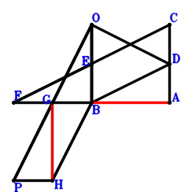
\(\because \) D is the midpoint of CA \(\therefore \small\overrightarrow{BD}=\dfrac{\small\overrightarrow{BA}}{2} + \dfrac{\small\overrightarrow{BC}}{2}\).\(\because \) E is the midpoint of OB \(\therefore \small\overrightarrow{BE}=\dfrac{\small\overrightarrow{BO}}{2}\).\(\because \) E is the midpoint of FC \(\therefore \small\overrightarrow{BF}=- \small\overrightarrow{BC} + 2 \small\overrightarrow{BE}=- \small\overrightarrow{BC} + \small\overrightarrow{BO}\).\(\because \) G is the midpoint of PO \(\therefore \small\overrightarrow{BG}=\dfrac{\small\overrightarrow{BO}}{2} + \dfrac{\small\overrightarrow{BP}}{2}\).\(\because \) PO//HB and PO=2HB \(\therefore \small\overrightarrow{BH}=- \dfrac{\small\overrightarrow{BO}}{2} + \dfrac{\small\overrightarrow{BP}}{2}\).\(\because \) OD=BD \(\therefore - \small\overrightarrow{DB}^{2} + \small\overrightarrow{OD}^{2}=- \small\overrightarrow{BD}^{2} + \left(\small\overrightarrow{BD} - \small\overrightarrow{BO}\right)^{2}=- \left(\dfrac{\small\overrightarrow{BA}}{2} + \dfrac{\small\overrightarrow{BC}}{2}\right)^{2} + \left(\dfrac{\small\overrightarrow{BA}}{2} + \dfrac{\small\overrightarrow{BC}}{2} - \small\overrightarrow{BO}\right)^{2}=- \small\overrightarrow{BA} \cdot \small\overrightarrow{BO} - \small\overrightarrow{BC} \cdot \small\overrightarrow{BO} + \small\overrightarrow{BO}^{2}=0\) . . . . . . \(①\)\(\because \) FB⊥BO \(\therefore - \small\overrightarrow{BF} \cdot \small\overrightarrow{BO}=- \small\overrightarrow{BO} \cdot \left(- \small\overrightarrow{BC} + \small\overrightarrow{BO}\right)=\small\overrightarrow{BC} \cdot \small\overrightarrow{BO} - \small\overrightarrow{BO}^{2}=0\) . . . . . . \(②\)In conclusion, \(\small\overrightarrow{AB} \cdot \small\overrightarrow{GH}=- \small\overrightarrow{BA} \cdot \left(- \small\overrightarrow{BG} + \small\overrightarrow{BH}\right)=\small\overrightarrow{BA} \cdot \small\overrightarrow{BO}=-①-②=0\), that is, BA⊥GH.
Exercise 3303： Let CEBO be a rectangle. FPGB is a parallelogram. D, O are the midpoints of CA, FB, respectively. DO=DB. Prove that PG⊥BA.
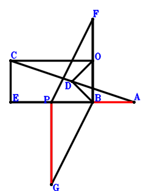
\(\because \) D is the midpoint of CA \(\therefore \small\overrightarrow{BD}=\dfrac{\small\overrightarrow{BA}}{2} + \dfrac{\small\overrightarrow{BC}}{2}\).\(\because \) CEBO is a parallelogram \(\therefore \small\overrightarrow{BE}=\small\overrightarrow{BC} - \small\overrightarrow{BO}\).\(\because \) O is the midpoint of FB \(\therefore \small\overrightarrow{BF}=2 \small\overrightarrow{BO}\).\(\because \) FPGB is a parallelogram \(\therefore \small\overrightarrow{BG}=- \small\overrightarrow{BF} + \small\overrightarrow{BP}=- 2 \small\overrightarrow{BO} + \small\overrightarrow{BP}\).\(\because \) DO=DB \(\therefore - \small\overrightarrow{DB}^{2} + \small\overrightarrow{OD}^{2}=- \small\overrightarrow{BD}^{2} + \left(\small\overrightarrow{BD} - \small\overrightarrow{BO}\right)^{2}=- \left(\dfrac{\small\overrightarrow{BA}}{2} + \dfrac{\small\overrightarrow{BC}}{2}\right)^{2} + \left(\dfrac{\small\overrightarrow{BA}}{2} + \dfrac{\small\overrightarrow{BC}}{2} - \small\overrightarrow{BO}\right)^{2}=- \small\overrightarrow{BA} \cdot \small\overrightarrow{BO} - \small\overrightarrow{BC} \cdot \small\overrightarrow{BO} + \small\overrightarrow{BO}^{2}=0\) . . . . . . \(①\)\(\because \) EB⊥BO \(\therefore \small\overrightarrow{BE} \cdot \small\overrightarrow{BO}=\small\overrightarrow{BO} \cdot \left(\small\overrightarrow{BC} - \small\overrightarrow{BO}\right)=\small\overrightarrow{BC} \cdot \small\overrightarrow{BO} - \small\overrightarrow{BO}^{2}=0\) . . . . . . \(②\)In conclusion, \(\small\overrightarrow{AB} \cdot \small\overrightarrow{PG}=- \small\overrightarrow{BA} \cdot \left(\small\overrightarrow{BG} - \small\overrightarrow{BP}\right)=2 \small\overrightarrow{BA} \cdot \small\overrightarrow{BO}=-2\cdot①-2\cdot②=0\), that is, PG⊥BA.
Exercise 3319： Let CEBO be a rectangle. OPGB is a parallelogram. F, D, H are the midpoints of PO, CA, GB, respectively. DO=DB. Prove that BA⊥FH.
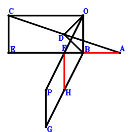
\(\because \) D is the midpoint of CA \(\therefore \small\overrightarrow{BD}=\dfrac{\small\overrightarrow{BA}}{2} + \dfrac{\small\overrightarrow{BC}}{2}\).\(\because \) CEBO is a parallelogram \(\therefore \small\overrightarrow{BE}=\small\overrightarrow{BC} - \small\overrightarrow{BO}\).\(\because \) F is the midpoint of PO \(\therefore \small\overrightarrow{BF}=\dfrac{\small\overrightarrow{BO}}{2} + \dfrac{\small\overrightarrow{BP}}{2}\).\(\because \) OPGB is a parallelogram \(\therefore \small\overrightarrow{BG}=- \small\overrightarrow{BO} + \small\overrightarrow{BP}\).\(\because \) H is the midpoint of GB \(\therefore \small\overrightarrow{BH}=\dfrac{\small\overrightarrow{BG}}{2}=- \dfrac{\small\overrightarrow{BO}}{2} + \dfrac{\small\overrightarrow{BP}}{2}\).\(\because \) DO=DB \(\therefore - \small\overrightarrow{DB}^{2} + \small\overrightarrow{OD}^{2}=- \small\overrightarrow{BD}^{2} + \left(\small\overrightarrow{BD} - \small\overrightarrow{BO}\right)^{2}=- \left(\dfrac{\small\overrightarrow{BA}}{2} + \dfrac{\small\overrightarrow{BC}}{2}\right)^{2} + \left(\dfrac{\small\overrightarrow{BA}}{2} + \dfrac{\small\overrightarrow{BC}}{2} - \small\overrightarrow{BO}\right)^{2}=- \small\overrightarrow{BA} \cdot \small\overrightarrow{BO} - \small\overrightarrow{BC} \cdot \small\overrightarrow{BO} + \small\overrightarrow{BO}^{2}=0\) . . . . . . \(①\)\(\because \) EB⊥BO \(\therefore \small\overrightarrow{BE} \cdot \small\overrightarrow{BO}=\small\overrightarrow{BO} \cdot \left(\small\overrightarrow{BC} - \small\overrightarrow{BO}\right)=\small\overrightarrow{BC} \cdot \small\overrightarrow{BO} - \small\overrightarrow{BO}^{2}=0\) . . . . . . \(②\)In conclusion, \(\small\overrightarrow{AB} \cdot \small\overrightarrow{FH}=- \small\overrightarrow{BA} \cdot \left(- \small\overrightarrow{BF} + \small\overrightarrow{BH}\right)=\small\overrightarrow{BA} \cdot \small\overrightarrow{BO}=-①-②=0\), that is, BA⊥FH.
Exercise 3329： Let OHIB be a trapezoid with OB//HI and OB=2HI. H, G, D are the midpoints of PB, PO, CA, respectively. E is the midpoint of OF and BC. OB⊥BF. OD=BD. Prove that BA⊥GI.
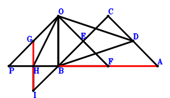
\(\because \) D is the midpoint of CA \(\therefore \small\overrightarrow{BD}=\dfrac{\small\overrightarrow{BA}}{2} + \dfrac{\small\overrightarrow{BC}}{2}\).\(\because \) E is the midpoint of BC \(\therefore \small\overrightarrow{BE}=\dfrac{\small\overrightarrow{BC}}{2}\).\(\because \) E is the midpoint of OF \(\therefore \small\overrightarrow{BF}=2 \small\overrightarrow{BE} - \small\overrightarrow{BO}=\small\overrightarrow{BC} - \small\overrightarrow{BO}\).\(\because \) G is the midpoint of PO \(\therefore \small\overrightarrow{BG}=\dfrac{\small\overrightarrow{BO}}{2} + \dfrac{\small\overrightarrow{BP}}{2}\).\(\because \) H is the midpoint of PB \(\therefore \small\overrightarrow{BH}=\dfrac{\small\overrightarrow{BP}}{2}\).\(\because \) OB//HI and OB=2HI \(\therefore \small\overrightarrow{BI}=- \dfrac{\small\overrightarrow{BO}}{2} + \dfrac{\small\overrightarrow{BP}}{2}\).\(\because \) OD=BD \(\therefore - \small\overrightarrow{DB}^{2} + \small\overrightarrow{OD}^{2}=- \small\overrightarrow{BD}^{2} + \left(\small\overrightarrow{BD} - \small\overrightarrow{BO}\right)^{2}=- \left(\dfrac{\small\overrightarrow{BA}}{2} + \dfrac{\small\overrightarrow{BC}}{2}\right)^{2} + \left(\dfrac{\small\overrightarrow{BA}}{2} + \dfrac{\small\overrightarrow{BC}}{2} - \small\overrightarrow{BO}\right)^{2}=- \small\overrightarrow{BA} \cdot \small\overrightarrow{BO} - \small\overrightarrow{BC} \cdot \small\overrightarrow{BO} + \small\overrightarrow{BO}^{2}=0\) . . . . . . \(①\)\(\because \) OB⊥BF \(\therefore \small\overrightarrow{BF} \cdot \small\overrightarrow{BO}=\small\overrightarrow{BO} \cdot \left(\small\overrightarrow{BC} - \small\overrightarrow{BO}\right)=\small\overrightarrow{BC} \cdot \small\overrightarrow{BO} - \small\overrightarrow{BO}^{2}=0\) . . . . . . \(②\)In conclusion, \(\small\overrightarrow{AB} \cdot \small\overrightarrow{GI}=- \small\overrightarrow{BA} \cdot \left(- \small\overrightarrow{BG} + \small\overrightarrow{BI}\right)=\small\overrightarrow{BA} \cdot \small\overrightarrow{BO}=-①-②=0\), that is, BA⊥GI.
Exercise 3512： Let COEB be a parallelogram. D is the midpoint of AC. OB⊥BE. DO=DB. Prove that AB⊥BO.
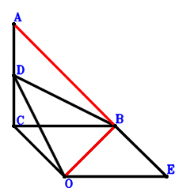
\(\because \) D is the midpoint of AC \(\therefore \small\overrightarrow{BD}=\dfrac{\small\overrightarrow{BA}}{2} + \dfrac{\small\overrightarrow{BC}}{2}\).\(\because \) COEB is a parallelogram \(\therefore \small\overrightarrow{BE}=- \small\overrightarrow{BC} + \small\overrightarrow{BO}\).\(\because \) DO=DB \(\therefore - \small\overrightarrow{DB}^{2} + \small\overrightarrow{OD}^{2}=- \small\overrightarrow{BD}^{2} + \left(\small\overrightarrow{BD} - \small\overrightarrow{BO}\right)^{2}=- \left(\dfrac{\small\overrightarrow{BA}}{2} + \dfrac{\small\overrightarrow{BC}}{2}\right)^{2} + \left(\dfrac{\small\overrightarrow{BA}}{2} + \dfrac{\small\overrightarrow{BC}}{2} - \small\overrightarrow{BO}\right)^{2}=- \small\overrightarrow{BA} \cdot \small\overrightarrow{BO} - \small\overrightarrow{BC} \cdot \small\overrightarrow{BO} + \small\overrightarrow{BO}^{2}=0\) . . . . . . \(①\)\(\because \) OB⊥BE \(\therefore - \small\overrightarrow{BE} \cdot \small\overrightarrow{BO}=- \small\overrightarrow{BO} \cdot \left(- \small\overrightarrow{BC} + \small\overrightarrow{BO}\right)=\small\overrightarrow{BC} \cdot \small\overrightarrow{BO} - \small\overrightarrow{BO}^{2}=0\) . . . . . . \(②\)In conclusion, \(\small\overrightarrow{BA} \cdot \small\overrightarrow{BO}=-①-②=0\), that is, AB⊥BO.
Exercise 3513： Let D be the midpoint of AC. E is the midpoint of CB and FO. FB⊥BO. DO=DB. Prove that AB⊥BO.
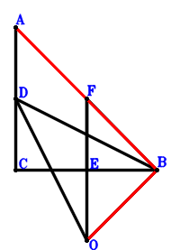
\(\because \) D is the midpoint of AC \(\therefore \small\overrightarrow{BD}=\dfrac{\small\overrightarrow{BA}}{2} + \dfrac{\small\overrightarrow{BC}}{2}\).\(\because \) E is the midpoint of CB \(\therefore \small\overrightarrow{BE}=\dfrac{\small\overrightarrow{BC}}{2}\).\(\because \) E is the midpoint of FO \(\therefore \small\overrightarrow{BF}=2 \small\overrightarrow{BE} - \small\overrightarrow{BO}=\small\overrightarrow{BC} - \small\overrightarrow{BO}\).\(\because \) DO=DB \(\therefore - \small\overrightarrow{DB}^{2} + \small\overrightarrow{OD}^{2}=- \small\overrightarrow{BD}^{2} + \left(\small\overrightarrow{BD} - \small\overrightarrow{BO}\right)^{2}=- \left(\dfrac{\small\overrightarrow{BA}}{2} + \dfrac{\small\overrightarrow{BC}}{2}\right)^{2} + \left(\dfrac{\small\overrightarrow{BA}}{2} + \dfrac{\small\overrightarrow{BC}}{2} - \small\overrightarrow{BO}\right)^{2}=- \small\overrightarrow{BA} \cdot \small\overrightarrow{BO} - \small\overrightarrow{BC} \cdot \small\overrightarrow{BO} + \small\overrightarrow{BO}^{2}=0\) . . . . . . \(①\)\(\because \) FB⊥BO \(\therefore \small\overrightarrow{BF} \cdot \small\overrightarrow{BO}=\small\overrightarrow{BO} \cdot \left(\small\overrightarrow{BC} - \small\overrightarrow{BO}\right)=\small\overrightarrow{BC} \cdot \small\overrightarrow{BO} - \small\overrightarrow{BO}^{2}=0\) . . . . . . \(②\)In conclusion, \(\small\overrightarrow{BA} \cdot \small\overrightarrow{BO}=-①-②=0\), that is, AB⊥BO.
Exercise 3591： Let EOBP and FOBE be parallelograms. CDB is a triangle with CD⊥DB and DO⊥CB where O lies on CB. D is the midpoint of CA. OD=OB. Prove that BA⊥FP.
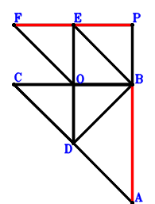
\(\because \) D is the midpoint of CA \(\therefore \small\overrightarrow{BD}=\dfrac{\small\overrightarrow{BA}}{2} + \dfrac{\small\overrightarrow{BC}}{2}\).\(\because \) EOBP is a parallelogram \(\therefore \small\overrightarrow{BE}=\small\overrightarrow{BO} + \small\overrightarrow{BP}\).\(\because \) FOBE is a parallelogram \(\therefore \small\overrightarrow{BF}=2 \small\overrightarrow{BO} + \small\overrightarrow{BP}\).\(\because \) CDB is a triangle with CD⊥DB and DO⊥CB where O lies on CB \(\therefore \small\overrightarrow{BC} \cdot \small\overrightarrow{BO} - \small\overrightarrow{BD}^{2}=\small\overrightarrow{BC} \cdot \small\overrightarrow{BO} - \left(\dfrac{\small\overrightarrow{BA}}{2} + \dfrac{\small\overrightarrow{BC}}{2}\right)^{2}=- \dfrac{\small\overrightarrow{BA}^{2}}{4} - \dfrac{\small\overrightarrow{BA} \cdot \small\overrightarrow{BC}}{2} - \dfrac{\small\overrightarrow{BC}^{2}}{4} + \small\overrightarrow{BC} \cdot \small\overrightarrow{BO}=0\) . . . . . . \(①\)\(\because \) OD=OB \(\therefore - \small\overrightarrow{OB}^{2} + \small\overrightarrow{OD}^{2}=- \small\overrightarrow{BO}^{2} + \left(\small\overrightarrow{BD} - \small\overrightarrow{BO}\right)^{2}=- \small\overrightarrow{BO}^{2} + \left(\dfrac{\small\overrightarrow{BA}}{2} + \dfrac{\small\overrightarrow{BC}}{2} - \small\overrightarrow{BO}\right)^{2}=\dfrac{\small\overrightarrow{BA}^{2}}{4} + \dfrac{\small\overrightarrow{BA} \cdot \small\overrightarrow{BC}}{2} - \small\overrightarrow{BA} \cdot \small\overrightarrow{BO} + \dfrac{\small\overrightarrow{BC}^{2}}{4} - \small\overrightarrow{BC} \cdot \small\overrightarrow{BO}=0\) . . . . . . \(②\)In conclusion, \(\small\overrightarrow{AB} \cdot \small\overrightarrow{FP}=- \small\overrightarrow{BA} \cdot \left(- \small\overrightarrow{BF} + \small\overrightarrow{BP}\right)=2 \small\overrightarrow{BA} \cdot \small\overrightarrow{BO}=-2\cdot①-2\cdot②=0\), that is, BA⊥FP.
Exercise 3595： Let FOBG be a parallelogram. CDB is a triangle with CD⊥DB and DO⊥CB where O lies on CB. D is the midpoint of CA. E is the midpoint of OF and PB. OD=OB. Prove that PG⊥BA.
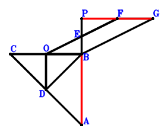
\(\because \) D is the midpoint of CA \(\therefore \small\overrightarrow{BD}=\dfrac{\small\overrightarrow{BA}}{2} + \dfrac{\small\overrightarrow{BC}}{2}\).\(\because \) E is the midpoint of PB \(\therefore \small\overrightarrow{BE}=\dfrac{\small\overrightarrow{BP}}{2}\).\(\because \) E is the midpoint of OF \(\therefore \small\overrightarrow{BF}=2 \small\overrightarrow{BE} - \small\overrightarrow{BO}=- \small\overrightarrow{BO} + \small\overrightarrow{BP}\).\(\because \) FOBG is a parallelogram \(\therefore \small\overrightarrow{BG}=- 2 \small\overrightarrow{BO} + \small\overrightarrow{BP}\).\(\because \) CDB is a triangle with CD⊥DB and DO⊥CB where O lies on CB \(\therefore \small\overrightarrow{BC} \cdot \small\overrightarrow{BO} - \small\overrightarrow{BD}^{2}=\small\overrightarrow{BC} \cdot \small\overrightarrow{BO} - \left(\dfrac{\small\overrightarrow{BA}}{2} + \dfrac{\small\overrightarrow{BC}}{2}\right)^{2}=- \dfrac{\small\overrightarrow{BA}^{2}}{4} - \dfrac{\small\overrightarrow{BA} \cdot \small\overrightarrow{BC}}{2} - \dfrac{\small\overrightarrow{BC}^{2}}{4} + \small\overrightarrow{BC} \cdot \small\overrightarrow{BO}=0\) . . . . . . \(①\)\(\because \) OD=OB \(\therefore - \small\overrightarrow{OB}^{2} + \small\overrightarrow{OD}^{2}=- \small\overrightarrow{BO}^{2} + \left(\small\overrightarrow{BD} - \small\overrightarrow{BO}\right)^{2}=- \small\overrightarrow{BO}^{2} + \left(\dfrac{\small\overrightarrow{BA}}{2} + \dfrac{\small\overrightarrow{BC}}{2} - \small\overrightarrow{BO}\right)^{2}=\dfrac{\small\overrightarrow{BA}^{2}}{4} + \dfrac{\small\overrightarrow{BA} \cdot \small\overrightarrow{BC}}{2} - \small\overrightarrow{BA} \cdot \small\overrightarrow{BO} + \dfrac{\small\overrightarrow{BC}^{2}}{4} - \small\overrightarrow{BC} \cdot \small\overrightarrow{BO}=0\) . . . . . . \(②\)In conclusion, \(\small\overrightarrow{AB} \cdot \small\overrightarrow{PG}=- \small\overrightarrow{BA} \cdot \left(\small\overrightarrow{BG} - \small\overrightarrow{BP}\right)=2 \small\overrightarrow{BA} \cdot \small\overrightarrow{BO}=-2\cdot①-2\cdot②=0\), that is, PG⊥BA.
Exercise 3638： Let CDB be a triangle with CD⊥DB and DO⊥CB where O lies on CB. B, O, D are the midpoints of EP, EF, CA, respectively. OD=OB. Prove that BA⊥FP.
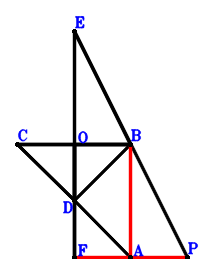
\(\because \) D is the midpoint of CA \(\therefore \small\overrightarrow{BD}=\dfrac{\small\overrightarrow{BA}}{2} + \dfrac{\small\overrightarrow{BC}}{2}\).\(\because \) B is the midpoint of EP \(\therefore \small\overrightarrow{BE}=- \small\overrightarrow{BP}\).\(\because \) O is the midpoint of EF \(\therefore \small\overrightarrow{BF}=- \small\overrightarrow{BE} + 2 \small\overrightarrow{BO}=2 \small\overrightarrow{BO} + \small\overrightarrow{BP}\).\(\because \) CDB is a triangle with CD⊥DB and DO⊥CB where O lies on CB \(\therefore \small\overrightarrow{BC} \cdot \small\overrightarrow{BO} - \small\overrightarrow{BD}^{2}=\small\overrightarrow{BC} \cdot \small\overrightarrow{BO} - \left(\dfrac{\small\overrightarrow{BA}}{2} + \dfrac{\small\overrightarrow{BC}}{2}\right)^{2}=- \dfrac{\small\overrightarrow{BA}^{2}}{4} - \dfrac{\small\overrightarrow{BA} \cdot \small\overrightarrow{BC}}{2} - \dfrac{\small\overrightarrow{BC}^{2}}{4} + \small\overrightarrow{BC} \cdot \small\overrightarrow{BO}=0\) . . . . . . \(①\)\(\because \) OD=OB \(\therefore - \small\overrightarrow{OB}^{2} + \small\overrightarrow{OD}^{2}=- \small\overrightarrow{BO}^{2} + \left(\small\overrightarrow{BD} - \small\overrightarrow{BO}\right)^{2}=- \small\overrightarrow{BO}^{2} + \left(\dfrac{\small\overrightarrow{BA}}{2} + \dfrac{\small\overrightarrow{BC}}{2} - \small\overrightarrow{BO}\right)^{2}=\dfrac{\small\overrightarrow{BA}^{2}}{4} + \dfrac{\small\overrightarrow{BA} \cdot \small\overrightarrow{BC}}{2} - \small\overrightarrow{BA} \cdot \small\overrightarrow{BO} + \dfrac{\small\overrightarrow{BC}^{2}}{4} - \small\overrightarrow{BC} \cdot \small\overrightarrow{BO}=0\) . . . . . . \(②\)In conclusion, \(\small\overrightarrow{AB} \cdot \small\overrightarrow{FP}=- \small\overrightarrow{BA} \cdot \left(- \small\overrightarrow{BF} + \small\overrightarrow{BP}\right)=2 \small\overrightarrow{BA} \cdot \small\overrightarrow{BO}=-2\cdot①-2\cdot②=0\), that is, BA⊥FP.
Exercise 3649： Let FOEP be a parallelogram. CDB is a triangle with CD⊥DB and DO⊥CB where O lies on CB. B, D are the midpoints of OE, CA, respectively. OD=OB. Prove that BA⊥FP.
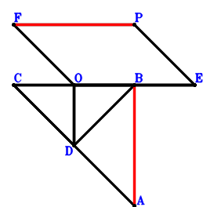
\(\because \) D is the midpoint of CA \(\therefore \small\overrightarrow{BD}=\dfrac{\small\overrightarrow{BA}}{2} + \dfrac{\small\overrightarrow{BC}}{2}\).\(\because \) B is the midpoint of OE \(\therefore \small\overrightarrow{BE}=- \small\overrightarrow{BO}\).\(\because \) FOEP is a parallelogram \(\therefore \small\overrightarrow{BF}=- \small\overrightarrow{BE} + \small\overrightarrow{BO} + \small\overrightarrow{BP}=2 \small\overrightarrow{BO} + \small\overrightarrow{BP}\).\(\because \) CDB is a triangle with CD⊥DB and DO⊥CB where O lies on CB \(\therefore \small\overrightarrow{BC} \cdot \small\overrightarrow{BO} - \small\overrightarrow{BD}^{2}=\small\overrightarrow{BC} \cdot \small\overrightarrow{BO} - \left(\dfrac{\small\overrightarrow{BA}}{2} + \dfrac{\small\overrightarrow{BC}}{2}\right)^{2}=- \dfrac{\small\overrightarrow{BA}^{2}}{4} - \dfrac{\small\overrightarrow{BA} \cdot \small\overrightarrow{BC}}{2} - \dfrac{\small\overrightarrow{BC}^{2}}{4} + \small\overrightarrow{BC} \cdot \small\overrightarrow{BO}=0\) . . . . . . \(①\)\(\because \) OD=OB \(\therefore - \small\overrightarrow{OB}^{2} + \small\overrightarrow{OD}^{2}=- \small\overrightarrow{BO}^{2} + \left(\small\overrightarrow{BD} - \small\overrightarrow{BO}\right)^{2}=- \small\overrightarrow{BO}^{2} + \left(\dfrac{\small\overrightarrow{BA}}{2} + \dfrac{\small\overrightarrow{BC}}{2} - \small\overrightarrow{BO}\right)^{2}=\dfrac{\small\overrightarrow{BA}^{2}}{4} + \dfrac{\small\overrightarrow{BA} \cdot \small\overrightarrow{BC}}{2} - \small\overrightarrow{BA} \cdot \small\overrightarrow{BO} + \dfrac{\small\overrightarrow{BC}^{2}}{4} - \small\overrightarrow{BC} \cdot \small\overrightarrow{BO}=0\) . . . . . . \(②\)In conclusion, \(\small\overrightarrow{AB} \cdot \small\overrightarrow{FP}=- \small\overrightarrow{BA} \cdot \left(- \small\overrightarrow{BF} + \small\overrightarrow{BP}\right)=2 \small\overrightarrow{BA} \cdot \small\overrightarrow{BO}=-2\cdot①-2\cdot②=0\), that is, BA⊥FP.
Exercise 3652： Let POBF be a parallelogram. CDB is a triangle with CD⊥DB and DO⊥CB where O lies on CB. E, D, G are the midpoints of OP, CA, BF, respectively. OD=OB. Prove that BA⊥EG.
\(\because \) D is the midpoint of CA \(\therefore \small\overrightarrow{BD}=\dfrac{\small\overrightarrow{BA}}{2} + \dfrac{\small\overrightarrow{BC}}{2}\).\(\because \) E is the midpoint of OP \(\therefore \small\overrightarrow{BE}=\dfrac{\small\overrightarrow{BO}}{2} + \dfrac{\small\overrightarrow{BP}}{2}\).\(\because \) POBF is a parallelogram \(\therefore \small\overrightarrow{BF}=- \small\overrightarrow{BO} + \small\overrightarrow{BP}\).\(\because \) G is the midpoint of BF \(\therefore \small\overrightarrow{BG}=\dfrac{\small\overrightarrow{BF}}{2}=- \dfrac{\small\overrightarrow{BO}}{2} + \dfrac{\small\overrightarrow{BP}}{2}\).\(\because \) CDB is a triangle with CD⊥DB and DO⊥CB where O lies on CB \(\therefore \small\overrightarrow{BC} \cdot \small\overrightarrow{BO} - \small\overrightarrow{BD}^{2}=\small\overrightarrow{BC} \cdot \small\overrightarrow{BO} - \left(\dfrac{\small\overrightarrow{BA}}{2} + \dfrac{\small\overrightarrow{BC}}{2}\right)^{2}=- \dfrac{\small\overrightarrow{BA}^{2}}{4} - \dfrac{\small\overrightarrow{BA} \cdot \small\overrightarrow{BC}}{2} - \dfrac{\small\overrightarrow{BC}^{2}}{4} + \small\overrightarrow{BC} \cdot \small\overrightarrow{BO}=0\) . . . . . . \(①\)\(\because \) OD=OB \(\therefore - \small\overrightarrow{OB}^{2} + \small\overrightarrow{OD}^{2}=- \small\overrightarrow{BO}^{2} + \left(\small\overrightarrow{BD} - \small\overrightarrow{BO}\right)^{2}=- \small\overrightarrow{BO}^{2} + \left(\dfrac{\small\overrightarrow{BA}}{2} + \dfrac{\small\overrightarrow{BC}}{2} - \small\overrightarrow{BO}\right)^{2}=\dfrac{\small\overrightarrow{BA}^{2}}{4} + \dfrac{\small\overrightarrow{BA} \cdot \small\overrightarrow{BC}}{2} - \small\overrightarrow{BA} \cdot \small\overrightarrow{BO} + \dfrac{\small\overrightarrow{BC}^{2}}{4} - \small\overrightarrow{BC} \cdot \small\overrightarrow{BO}=0\) . . . . . . \(②\)In conclusion, \(\small\overrightarrow{AB} \cdot \small\overrightarrow{EG}=- \small\overrightarrow{BA} \cdot \left(- \small\overrightarrow{BE} + \small\overrightarrow{BG}\right)=\small\overrightarrow{BA} \cdot \small\overrightarrow{BO}=-①-②=0\), that is, BA⊥EG.
Exercise 3685： Let FEBO and EPBO be parallelograms. D is the midpoint of AC. AB⊥FP. DO=OB. Given that C, O, B are collinear, prove that \(DB^{2}=CB \cdot OB\).
Exercise 3690： Let EPBO be a parallelogram. D is the midpoint of AC. F is the midpoint of GO and PB. EG⊥AB. DO=OB. Given that C, O, B are collinear, prove that \(DB^{2}=CB \cdot OB\).
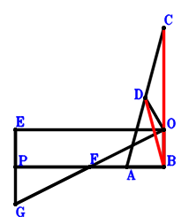
\(\because \) D is the midpoint of AC \(\therefore \small\overrightarrow{BD}=\dfrac{\small\overrightarrow{BA}}{2} + \dfrac{\small\overrightarrow{BC}}{2}\).\(\because \) EPBO is a parallelogram \(\therefore \small\overrightarrow{BE}=\small\overrightarrow{BO} + \small\overrightarrow{BP}\).\(\because \) F is the midpoint of PB \(\therefore \small\overrightarrow{BF}=\dfrac{\small\overrightarrow{BP}}{2}\).\(\because \) F is the midpoint of GO \(\therefore \small\overrightarrow{BG}=2 \small\overrightarrow{BF} - \small\overrightarrow{BO}=- \small\overrightarrow{BO} + \small\overrightarrow{BP}\).\(\because \) DO=OB \(\therefore - \small\overrightarrow{OB}^{2} + \small\overrightarrow{OD}^{2}=- \small\overrightarrow{BO}^{2} + \left(\small\overrightarrow{BD} - \small\overrightarrow{BO}\right)^{2}=- \small\overrightarrow{BO}^{2} + \left(\dfrac{\small\overrightarrow{BA}}{2} + \dfrac{\small\overrightarrow{BC}}{2} - \small\overrightarrow{BO}\right)^{2}=\dfrac{\small\overrightarrow{BA}^{2}}{4} + \dfrac{\small\overrightarrow{BA} \cdot \small\overrightarrow{BC}}{2} - \small\overrightarrow{BA} \cdot \small\overrightarrow{BO} + \dfrac{\small\overrightarrow{BC}^{2}}{4} - \small\overrightarrow{BC} \cdot \small\overrightarrow{BO}=0\) . . . . . . \(①\)\(\because \) EG⊥AB \(\therefore \small\overrightarrow{AB} \cdot \small\overrightarrow{EG}=- \small\overrightarrow{BA} \cdot \left(- \small\overrightarrow{BE} + \small\overrightarrow{BG}\right)=2 \small\overrightarrow{BA} \cdot \small\overrightarrow{BO}=0\) . . . . . . \(②\)In conclusion, \(\small\overrightarrow{BC} \cdot \small\overrightarrow{BO} - \small\overrightarrow{BD}^{2}=\small\overrightarrow{BC} \cdot \small\overrightarrow{BO} - \left(\dfrac{\small\overrightarrow{BA}}{2} + \dfrac{\small\overrightarrow{BC}}{2}\right)^{2}=- \dfrac{\small\overrightarrow{BA}^{2}}{4} - \dfrac{\small\overrightarrow{BA} \cdot \small\overrightarrow{BC}}{2} - \dfrac{\small\overrightarrow{BC}^{2}}{4} + \small\overrightarrow{BC} \cdot \small\overrightarrow{BO}=-①-1/2\cdot②=0\)\(\because\) C, O, B are collinear \(\therefore\) \(DB^{2}=CB \cdot OB\).
Exercise 3731： Let O, D, B be the midpoints of EP, AC, FP, respectively. EF⊥AB. DO=OB. Given that C, O, B are collinear, prove that \(DB^{2}=CB \cdot OB\).
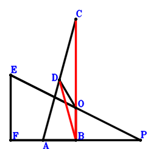
\(\because \) D is the midpoint of AC \(\therefore \small\overrightarrow{BD}=\dfrac{\small\overrightarrow{BA}}{2} + \dfrac{\small\overrightarrow{BC}}{2}\).\(\because \) O is the midpoint of EP \(\therefore \small\overrightarrow{BE}=2 \small\overrightarrow{BO} - \small\overrightarrow{BP}\).\(\because \) B is the midpoint of FP \(\therefore \small\overrightarrow{BF}=- \small\overrightarrow{BP}\).\(\because \) DO=OB \(\therefore - \small\overrightarrow{OB}^{2} + \small\overrightarrow{OD}^{2}=- \small\overrightarrow{BO}^{2} + \left(\small\overrightarrow{BD} - \small\overrightarrow{BO}\right)^{2}=- \small\overrightarrow{BO}^{2} + \left(\dfrac{\small\overrightarrow{BA}}{2} + \dfrac{\small\overrightarrow{BC}}{2} - \small\overrightarrow{BO}\right)^{2}=\dfrac{\small\overrightarrow{BA}^{2}}{4} + \dfrac{\small\overrightarrow{BA} \cdot \small\overrightarrow{BC}}{2} - \small\overrightarrow{BA} \cdot \small\overrightarrow{BO} + \dfrac{\small\overrightarrow{BC}^{2}}{4} - \small\overrightarrow{BC} \cdot \small\overrightarrow{BO}=0\) . . . . . . \(①\)\(\because \) EF⊥AB \(\therefore \small\overrightarrow{AB} \cdot \small\overrightarrow{EF}=- \small\overrightarrow{BA} \cdot \left(- \small\overrightarrow{BE} + \small\overrightarrow{BF}\right)=2 \small\overrightarrow{BA} \cdot \small\overrightarrow{BO}=0\) . . . . . . \(②\)In conclusion, \(\small\overrightarrow{BC} \cdot \small\overrightarrow{BO} - \small\overrightarrow{BD}^{2}=\small\overrightarrow{BC} \cdot \small\overrightarrow{BO} - \left(\dfrac{\small\overrightarrow{BA}}{2} + \dfrac{\small\overrightarrow{BC}}{2}\right)^{2}=- \dfrac{\small\overrightarrow{BA}^{2}}{4} - \dfrac{\small\overrightarrow{BA} \cdot \small\overrightarrow{BC}}{2} - \dfrac{\small\overrightarrow{BC}^{2}}{4} + \small\overrightarrow{BC} \cdot \small\overrightarrow{BO}=-①-1/2\cdot②=0\)\(\because\) C, O, B are collinear \(\therefore\) \(DB^{2}=CB \cdot OB\).
Exercise 3737： Let EPBO be a trapezoid with EP//OB and EP=2OB. D is the midpoint of AC. AB⊥EP. DO=OB. Given that C, O, B are collinear, prove that \(DB^{2}=CB \cdot OB\).
Exercise 3746： Let OPFB be a parallelogram. E, G, D are the midpoints of PO, FB, AC, respectively. AB⊥EG. DO=OB. Given that C, O, B are collinear, prove that \(DB^{2}=CB \cdot OB\).
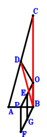
\(\because \) D is the midpoint of AC \(\therefore \small\overrightarrow{BD}=\dfrac{\small\overrightarrow{BA}}{2} + \dfrac{\small\overrightarrow{BC}}{2}\).\(\because \) E is the midpoint of PO \(\therefore \small\overrightarrow{BE}=\dfrac{\small\overrightarrow{BO}}{2} + \dfrac{\small\overrightarrow{BP}}{2}\).\(\because \) OPFB is a parallelogram \(\therefore \small\overrightarrow{BF}=- \small\overrightarrow{BO} + \small\overrightarrow{BP}\).\(\because \) G is the midpoint of FB \(\therefore \small\overrightarrow{BG}=\dfrac{\small\overrightarrow{BF}}{2}=- \dfrac{\small\overrightarrow{BO}}{2} + \dfrac{\small\overrightarrow{BP}}{2}\).\(\because \) DO=OB \(\therefore - \small\overrightarrow{OB}^{2} + \small\overrightarrow{OD}^{2}=- \small\overrightarrow{BO}^{2} + \left(\small\overrightarrow{BD} - \small\overrightarrow{BO}\right)^{2}=- \small\overrightarrow{BO}^{2} + \left(\dfrac{\small\overrightarrow{BA}}{2} + \dfrac{\small\overrightarrow{BC}}{2} - \small\overrightarrow{BO}\right)^{2}=\dfrac{\small\overrightarrow{BA}^{2}}{4} + \dfrac{\small\overrightarrow{BA} \cdot \small\overrightarrow{BC}}{2} - \small\overrightarrow{BA} \cdot \small\overrightarrow{BO} + \dfrac{\small\overrightarrow{BC}^{2}}{4} - \small\overrightarrow{BC} \cdot \small\overrightarrow{BO}=0\) . . . . . . \(①\)\(\because \) AB⊥EG \(\therefore \small\overrightarrow{AB} \cdot \small\overrightarrow{EG}=- \small\overrightarrow{BA} \cdot \left(- \small\overrightarrow{BE} + \small\overrightarrow{BG}\right)=\small\overrightarrow{BA} \cdot \small\overrightarrow{BO}=0\) . . . . . . \(②\)In conclusion, \(\small\overrightarrow{BC} \cdot \small\overrightarrow{BO} - \small\overrightarrow{BD}^{2}=\small\overrightarrow{BC} \cdot \small\overrightarrow{BO} - \left(\dfrac{\small\overrightarrow{BA}}{2} + \dfrac{\small\overrightarrow{BC}}{2}\right)^{2}=- \dfrac{\small\overrightarrow{BA}^{2}}{4} - \dfrac{\small\overrightarrow{BA} \cdot \small\overrightarrow{BC}}{2} - \dfrac{\small\overrightarrow{BC}^{2}}{4} + \small\overrightarrow{BC} \cdot \small\overrightarrow{BO}=-①-②=0\)\(\because\) C, O, B are collinear \(\therefore\) \(DB^{2}=CB \cdot OB\).
Exercise 3761： Let D be the midpoint of CA. G is the midpoint of HP and FO. E is the midpoint of OP and FB. HB⊥BA. DO=OB. Given that C, O, B are collinear, prove that \(DB^{2}=CB \cdot OB\).
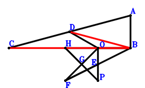
\(\because \) D is the midpoint of CA \(\therefore \small\overrightarrow{BD}=\dfrac{\small\overrightarrow{BA}}{2} + \dfrac{\small\overrightarrow{BC}}{2}\).\(\because \) E is the midpoint of OP \(\therefore \small\overrightarrow{BE}=\dfrac{\small\overrightarrow{BO}}{2} + \dfrac{\small\overrightarrow{BP}}{2}\).\(\because \) E is the midpoint of FB \(\therefore \small\overrightarrow{BF}=2 \small\overrightarrow{BE}=\small\overrightarrow{BO} + \small\overrightarrow{BP}\).\(\because \) G is the midpoint of FO \(\therefore \small\overrightarrow{BG}=\dfrac{\small\overrightarrow{BF}}{2} + \dfrac{\small\overrightarrow{BO}}{2}=\small\overrightarrow{BO} + \dfrac{\small\overrightarrow{BP}}{2}\).\(\because \) G is the midpoint of HP \(\therefore \small\overrightarrow{BH}=2 \small\overrightarrow{BG} - \small\overrightarrow{BP}=2 \small\overrightarrow{BO}\).\(\because \) DO=OB \(\therefore - \small\overrightarrow{OB}^{2} + \small\overrightarrow{OD}^{2}=- \small\overrightarrow{BO}^{2} + \left(\small\overrightarrow{BD} - \small\overrightarrow{BO}\right)^{2}=- \small\overrightarrow{BO}^{2} + \left(\dfrac{\small\overrightarrow{BA}}{2} + \dfrac{\small\overrightarrow{BC}}{2} - \small\overrightarrow{BO}\right)^{2}=\dfrac{\small\overrightarrow{BA}^{2}}{4} + \dfrac{\small\overrightarrow{BA} \cdot \small\overrightarrow{BC}}{2} - \small\overrightarrow{BA} \cdot \small\overrightarrow{BO} + \dfrac{\small\overrightarrow{BC}^{2}}{4} - \small\overrightarrow{BC} \cdot \small\overrightarrow{BO}=0\) . . . . . . \(①\)\(\because \) HB⊥BA \(\therefore \small\overrightarrow{BA} \cdot \small\overrightarrow{BH}=2 \small\overrightarrow{BA} \cdot \small\overrightarrow{BO}=0\) . . . . . . \(②\)In conclusion, \(\small\overrightarrow{BC} \cdot \small\overrightarrow{BO} - \small\overrightarrow{BD}^{2}=\small\overrightarrow{BC} \cdot \small\overrightarrow{BO} - \left(\dfrac{\small\overrightarrow{BA}}{2} + \dfrac{\small\overrightarrow{BC}}{2}\right)^{2}=- \dfrac{\small\overrightarrow{BA}^{2}}{4} - \dfrac{\small\overrightarrow{BA} \cdot \small\overrightarrow{BC}}{2} - \dfrac{\small\overrightarrow{BC}^{2}}{4} + \small\overrightarrow{BC} \cdot \small\overrightarrow{BO}=-①-1/2\cdot②=0\)\(\because\) C, O, B are collinear \(\therefore\) \(DB^{2}=CB \cdot OB\).
Exercise 3767： Let PEOB be a trapezoid with PB//EO and PB=2EO. E, D are the midpoints of FP, CA, respectively. FB⊥BA. OD=OB. Given that O, C, B are collinear, prove that \(DB^{2}=CB \cdot OB\).
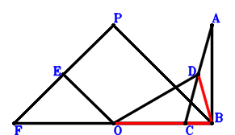
\(\because \) D is the midpoint of CA \(\therefore \small\overrightarrow{BD}=\dfrac{\small\overrightarrow{BA}}{2} + \dfrac{\small\overrightarrow{BC}}{2}\).\(\because \) PB//EO and PB=2EO \(\therefore \small\overrightarrow{BE}=\small\overrightarrow{BO} + \dfrac{\small\overrightarrow{BP}}{2}\).\(\because \) E is the midpoint of FP \(\therefore \small\overrightarrow{BF}=2 \small\overrightarrow{BE} - \small\overrightarrow{BP}=2 \small\overrightarrow{BO}\).\(\because \) OD=OB \(\therefore - \small\overrightarrow{OB}^{2} + \small\overrightarrow{OD}^{2}=- \small\overrightarrow{BO}^{2} + \left(\small\overrightarrow{BD} - \small\overrightarrow{BO}\right)^{2}=- \small\overrightarrow{BO}^{2} + \left(\dfrac{\small\overrightarrow{BA}}{2} + \dfrac{\small\overrightarrow{BC}}{2} - \small\overrightarrow{BO}\right)^{2}=\dfrac{\small\overrightarrow{BA}^{2}}{4} + \dfrac{\small\overrightarrow{BA} \cdot \small\overrightarrow{BC}}{2} - \small\overrightarrow{BA} \cdot \small\overrightarrow{BO} + \dfrac{\small\overrightarrow{BC}^{2}}{4} - \small\overrightarrow{BC} \cdot \small\overrightarrow{BO}=0\) . . . . . . \(①\)\(\because \) FB⊥BA \(\therefore \small\overrightarrow{BA} \cdot \small\overrightarrow{BF}=2 \small\overrightarrow{BA} \cdot \small\overrightarrow{BO}=0\) . . . . . . \(②\)In conclusion, \(\small\overrightarrow{BC} \cdot \small\overrightarrow{BO} - \small\overrightarrow{BD}^{2}=\small\overrightarrow{BC} \cdot \small\overrightarrow{BO} - \left(\dfrac{\small\overrightarrow{BA}}{2} + \dfrac{\small\overrightarrow{BC}}{2}\right)^{2}=- \dfrac{\small\overrightarrow{BA}^{2}}{4} - \dfrac{\small\overrightarrow{BA} \cdot \small\overrightarrow{BC}}{2} - \dfrac{\small\overrightarrow{BC}^{2}}{4} + \small\overrightarrow{BC} \cdot \small\overrightarrow{BO}=-①-1/2\cdot②=0\)\(\because\) O, C, B are collinear \(\therefore\) \(DB^{2}=CB \cdot OB\).
Exercise 3769： Let POBF be a parallelogram. D is the midpoint of CA. E is the midpoint of OP and GF. GB⊥BA. DO=OB. Given that C, O, B are collinear, prove that \(DB^{2}=CB \cdot OB\).
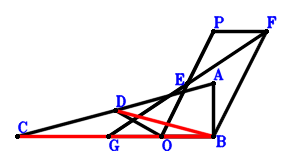
\(\because \) D is the midpoint of CA \(\therefore \small\overrightarrow{BD}=\dfrac{\small\overrightarrow{BA}}{2} + \dfrac{\small\overrightarrow{BC}}{2}\).\(\because \) E is the midpoint of OP \(\therefore \small\overrightarrow{BE}=\dfrac{\small\overrightarrow{BO}}{2} + \dfrac{\small\overrightarrow{BP}}{2}\).\(\because \) POBF is a parallelogram \(\therefore \small\overrightarrow{BF}=- \small\overrightarrow{BO} + \small\overrightarrow{BP}\).\(\because \) E is the midpoint of GF \(\therefore \small\overrightarrow{BG}=- \small\overrightarrow{BF} + \small\overrightarrow{BO} + \small\overrightarrow{BP}=2 \small\overrightarrow{BO}\).\(\because \) DO=OB \(\therefore - \small\overrightarrow{OB}^{2} + \small\overrightarrow{OD}^{2}=- \small\overrightarrow{BO}^{2} + \left(\small\overrightarrow{BD} - \small\overrightarrow{BO}\right)^{2}=- \small\overrightarrow{BO}^{2} + \left(\dfrac{\small\overrightarrow{BA}}{2} + \dfrac{\small\overrightarrow{BC}}{2} - \small\overrightarrow{BO}\right)^{2}=\dfrac{\small\overrightarrow{BA}^{2}}{4} + \dfrac{\small\overrightarrow{BA} \cdot \small\overrightarrow{BC}}{2} - \small\overrightarrow{BA} \cdot \small\overrightarrow{BO} + \dfrac{\small\overrightarrow{BC}^{2}}{4} - \small\overrightarrow{BC} \cdot \small\overrightarrow{BO}=0\) . . . . . . \(①\)\(\because \) GB⊥BA \(\therefore \small\overrightarrow{BA} \cdot \small\overrightarrow{BG}=2 \small\overrightarrow{BA} \cdot \small\overrightarrow{BO}=0\) . . . . . . \(②\)In conclusion, \(\small\overrightarrow{BC} \cdot \small\overrightarrow{BO} - \small\overrightarrow{BD}^{2}=\small\overrightarrow{BC} \cdot \small\overrightarrow{BO} - \left(\dfrac{\small\overrightarrow{BA}}{2} + \dfrac{\small\overrightarrow{BC}}{2}\right)^{2}=- \dfrac{\small\overrightarrow{BA}^{2}}{4} - \dfrac{\small\overrightarrow{BA} \cdot \small\overrightarrow{BC}}{2} - \dfrac{\small\overrightarrow{BC}^{2}}{4} + \small\overrightarrow{BC} \cdot \small\overrightarrow{BO}=-①-1/2\cdot②=0\)\(\because\) C, O, B are collinear \(\therefore\) \(DB^{2}=CB \cdot OB\).